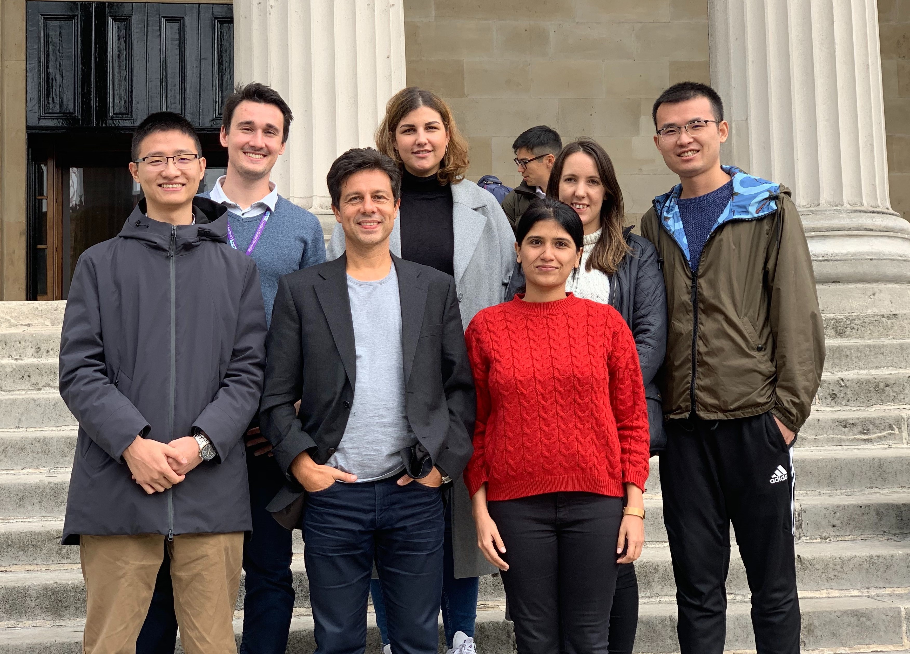

Our Team

Our Interests
The ‘Information, Inference and Machine Learning’ group focuses on the foundations and applications of information theory, information processing, and machine learning systems
Concretely, our current research concentrates on the information-theoreticfoundations of learning paradigms such as supervised learning, unsupervised learning, deep learning and meta-learning.
It also concentrates — in collaboration with domain experts — on applications of machine learning systems to a variety of areas including arts and humanities and climate science.
Our research is funded by diverse bodies such as EPSRC, InnovateUK, H2020, Royal Society and Industry
Publications » Projects »Latest News
- Our papers ‘Optimization Guarantees for ISTA and ADMM based Unfolded Networks’ and ‘Blind Unmixing Using a Double Deep Image Prior’ have been accepted at IEEE ICASSP 2022.
- Our papers ‘A Theoretical-Inspired Semi-supervised Learning Algorithm under Covariate-shift’ and ‘Characterizing and Understanding the Generalization Error of Transfer Learning with Gibbs Algorithm’ have been accepted at AISTATS 2022.
-
Jaweria Amjad has successfully defended her PhD in December 2021.
-
Our paper ‘An Exact Characterization of the Generalization Error for the Gibbs Algorithm’ has been accepted at NeurIPS 2021.
-
Our paper ‘Blind Pareto Fairness’ has been accepted at ICML 2021.
-
Zhuo Zhi has joined the ‘Information, Inference and Machine Learning’ group in October 2021.
-
Mathieu Alain has joined the ‘Information, Inference and Machine Learning’ group in October 2021.
-
Maria Carolina Novitsari has joined the ‘Information, Inference and Machine Learning’ group in October 2020.
-
Martin Ferianc has joined the ‘Information, Inference and Machine Learning’ group in October 2019.
-
Zahra Sabetsarvestani has successfully defended her PhD in September 2019.
Featured Projects
Innovative Machine Learning to Constrain Aerosol-Cloud Climate Impact
This research project – a collaboration between data scientists and climate scientists – will develop machine learning solutions to the analysis of the exploding amounts of climate data in order to deliver breakthroughs in climate research, whilst training the next generation of scientists.
This project is funded by the European Commission.
Francisco de Goya, Doña Isabel de Porcel (NG1473)
Art Through the ICT Lens
This research project develops signal processing, image processing, and machine learning technology ingesting multi-dimensional datasets acquired on paintings to unveil distributions of materials within artwork.
This project is funded by the EPSRC.
Hurbert and Jan van Eyck Ghent Altarpiece
Multi-Modal Signal Processing for Art Investigation
This research project develops machine learning technology ingesting multi-dimensional datasets acquired on paintings to reveal features of interest within paintings such as underdrawings, pentimenti, or concealed designs.
This project is funded by a Royal Society Newton International Fellowship.
Information-Theoretic Foundations of Deep Learning
This research project explores the information-theoretic foundations of deep learning systems, including architectures, algorithms, and generalization bounds for supervised and semi-supervised deep learning approaches.
This project is funded by a Royal Society Newton International Fellowship.
Learning to Communicate
This research project develops physical-layer technology based on deep learning solutions applicable to machine type communications.
This project is funded by the EPSRC.

Machine Learning Through an Information-Theoretic Lens: From Deep-Learning to Meta-Learning
This research project explores the information-theoretic foundations of machine learning systems, with a special emphasis on emerging approaches such as transfer learning, continuous learning, and meta-learning.
This project is funded by Weizmann – UK Making Connections Programme.